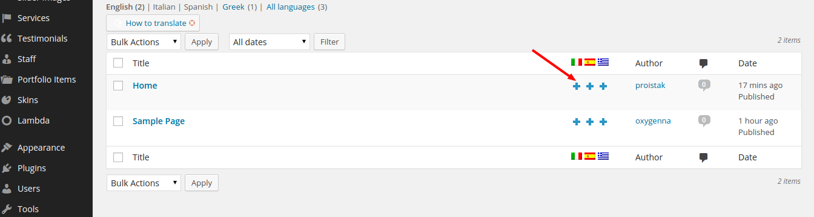
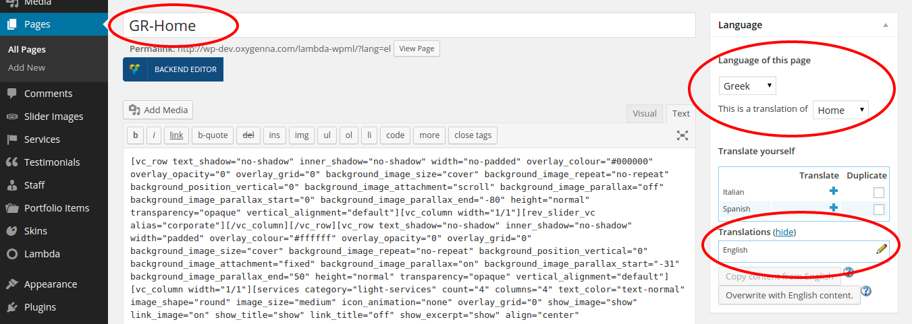
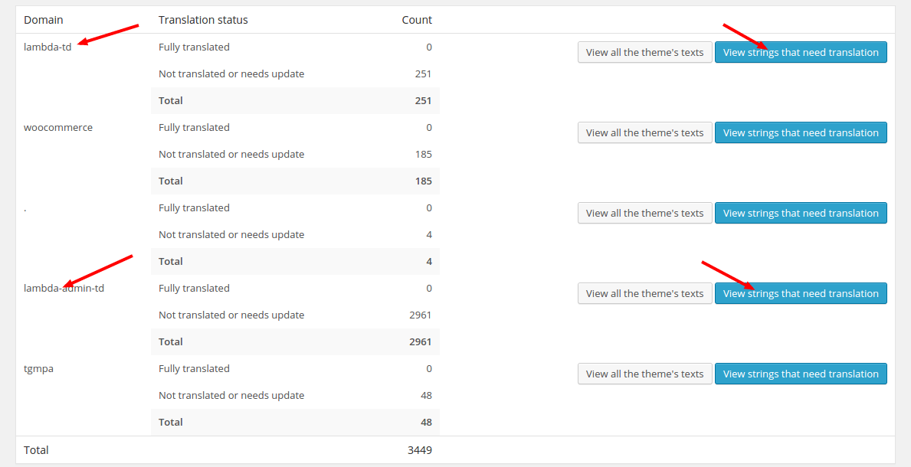
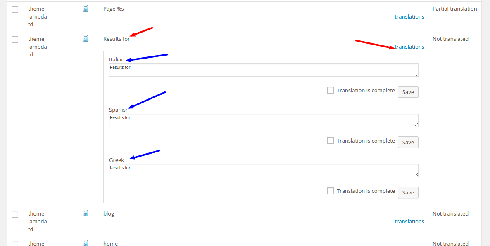
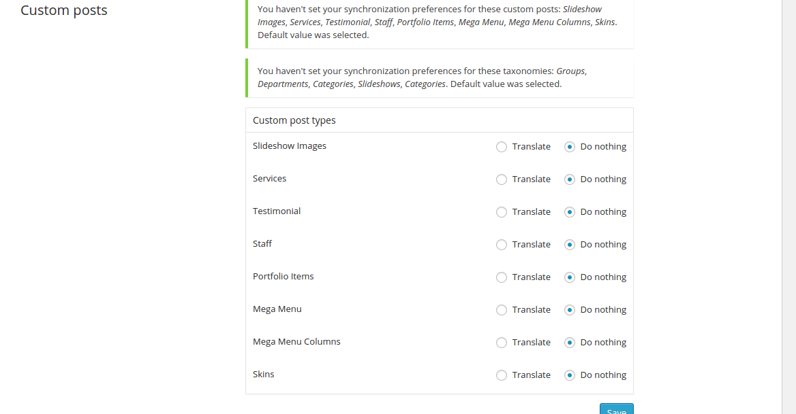
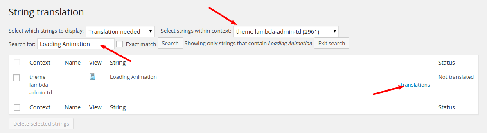

Translations
How to translate your website
How to translate your website
In order to make WordPress recognize the language to which you want to translate the core WordPress, the theme or the plugins, you have to define the language within the wp-config.phpfile or change a setting within the dashboard.
Login to your FTP account and edit the wp-config.phpfile. In the wp-config.php file, look for WPLANG constant which looks like the following code:
define(‘WPLANG’, ”);Define the WPLANG constructor by adding the ISO language code of your language. The names consist of locals, a combination of language and regional dialect. Examples: de_DE, nl_NL, es_ES (for more info see here: ISO language codes).
E.g. for translating to Deutsch language, change the WPLANG constant will look like the following code:
define(‘WPLANG’, ‘de_DE’);For Wordpress 4.0 or 4.0+ Users:
After the wp-config.php file is edited, login to WP-admin dashboard and navigate to Settings -> General Settings page. Make sure
Site Languageoption is set correctly.
No matter if you are setting up a complete new language file or if you just want to edit a translation of one of the pre built language files, the steps to take are easy and more or less the same. There are many .po editors to choose from, but we suggest POEditas it is easy to use, it is available for all platforms and it is freeware.
Your translation files should be located inside the /languages folder in the root folder of the theme. When you first download the theme, there will be a swatch_front.potfile that you need to edit in order to setup you preferred language's translation.
Visit the Translator Handbook for more info on how to Download & Install POEdit.
In order to start a new translation follow these steps
In orderto edit a pre built language file follow these steps
Updating your translations after a theme update is usually not required. If you want to keep your customized translations and add any new strings that have been added to a new version of the theme, you can update from the .pot file to get the new strings to your file. Follow these steps to do so
Swatch is fully compatible with the WPMLplugin. WPML consists of several modules. The basic module turns WordPress sites multilingual. Other modules help with an enhanced translation process, string translation, media translation and other functions.
You can download the WPML plugin from wpml.org.
When you want to translate a page or a post, go to your posts or page admin screen. You will see a list of pages. You see columns for each active language, with a pencilicon (for ‘edit translation’) or a ‘ +’ icon (for ‘add translation’) next to each page. 
Once you click on the '+' or the pencil icon, you should be taken to page editing.

An important part of the translation process is translating the strings that exist inside the theme. Locate these strings from WPML->Theme and plugins localization. From the next page, you need to click on the Scan the theme for strings, which will scan the theme for strings that can be translated, and will create a table with the domains that hold translatable strings. Click on the View strings that need translation button of the domain that you want to translate. If you want to translate the frontend strings of Swatch, edit the swatch-tddomain. From the next screen, clicking on the translations link should allow you to add translations for all the available languages. 
Swatch comes with a rich set of custom post types such as portfolios and sliders, and custom taxonomies. In order to get a similar interface for translation/duplication as for posts and pages, you need to go to WPML->Translation Management, and select the tab ‘Multilingual Content Setup’. At the bottom of the page you’ll see: 
You need to select ‘translate’ for the custom post types you want to make translatable. Similarly, if you choose ‘translate’ for custom taxonomies such as Departments, etc. you’ll get a similar interface for translation as for page categories.
Widgets are translated from WPML->String Translation. Refer to How to Display Different Widgets Per Language for more info on how to translate your widgets.
Theme animations are also translated from WPML->String Translation. If you filter through theme swatch-admin-tdfrom the Select strings within contextfilter, you should have all the backend strings that can be translated. Alternatively, if you are searching for a specific string, you can use the Search form. 